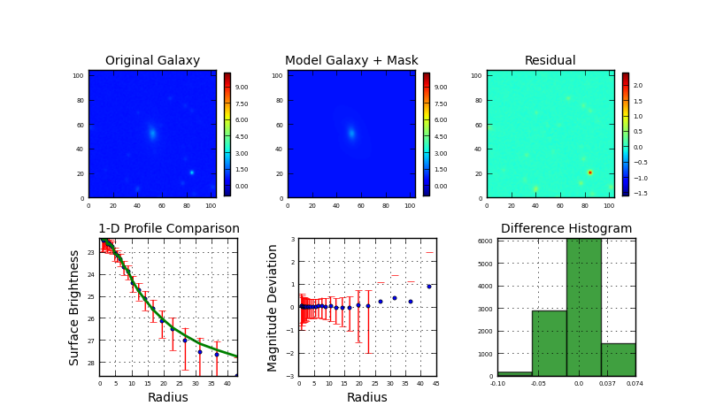

| Chi2nu is large! |
| Image | Itest_237.fits NED | RA | 14 47 26.0 | ||||
|---|---|---|---|---|---|---|---|
| Init. par. file | G_test_237.in | Dec | +08 28 24.9 | ||||
| Restart file | galfit.01 | z | 0.37546 | ||||
|
Separation between psf and image |
50055.0 arc sec | |||||
|  | |
||||||
|
| Component | Center (x) | Center (y) | Magnitude | Scale Radius (pixels) | Scale Radius (kpc) | n | Axis Ratio | Position Angle | Boxy/Disky |
|---|---|---|---|---|---|---|---|---|---|
| sersic bulge | 53.0 | 51.83 | 20.5751 | 268.0 | 545.0 | 7.4807 | 0.4211 | -30.0709 | 0 |
| 0.26 | 0.32 | 0.7317 | 365.6013 | 743.4 | 2.5687 | 0.0182 | 3.0642 | 0 | |
| disk | 51.86 | 52.85 | 22.236 | 3.0173 | 6.136 | 0.4333 | -6.5233 | 0 | |
| 0.04 | 0.08 | 0.0347 | 0.0507 | 0.103 | 0.0113 | 1.1964 | 0 | ||
| Concentration | Asymmetry | Clumpness | Gini Coefficient | M20 | B/D | B/T | MagInRe | ||
| 2.522 | 0.095 | 0.178 | 0.522 | -1.87 | 4.617 | 0.821 | 32.59 |